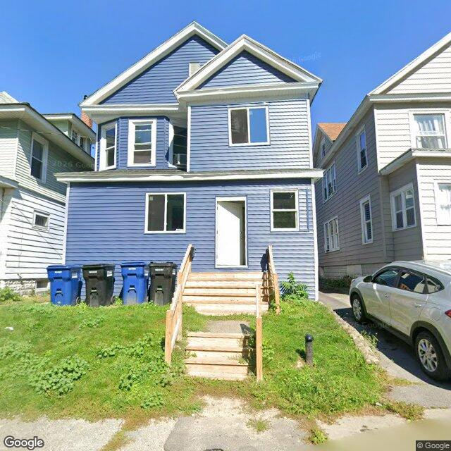

Property entry
416-18 Burdick Ave
Published 2026-10-11T21:06:33+00:00
Parcel key: 003-17-380

City records
Matches use parcel IDs or normalized property addresses. Nearby properties are not treated as matches. Records may include historical or closed cases; check each record's status and dates. Publication dates are not source-data dates.
Vacant properties 0
No matches stored for this feed. The feed or address matching may be incomplete; this is not confirmation that no records exist.
Records refreshed 2026-10-27.
Rental registry 1
- Latitude
- 43.07786983
- Longitude
- -76.15623917
- NeedsRR
- Yes
- ObjectId
- 1721
- PropertyAddress
- 416-18 Burdick Ave
- RR_app_received
- 1752710400000
Records refreshed 2026-10-27.
Code violations 33
- Latitude
- 43.07786983
- Longitude
- -76.15623917
- Neighborhood
- Court-Woodlawn
- ObjectId
- 93691
- SBL
- 003.-17-38.0
- complaint_address
- 416-18 Burdick Ave
- Latitude
- 43.07786983
- Longitude
- -76.15623917
- Neighborhood
- Court-Woodlawn
- ObjectId
- 93693
- SBL
- 003.-17-38.0
- complaint_address
- 416-18 Burdick Ave
- Latitude
- 43.07786983
- Longitude
- -76.15623917
- Neighborhood
- Court-Woodlawn
- ObjectId
- 93696
- SBL
- 003.-17-38.0
- complaint_address
- 416-18 Burdick Ave
- Latitude
- 43.07786983
- Longitude
- -76.15623917
- Neighborhood
- Court-Woodlawn
- ObjectId
- 93699
- SBL
- 003.-17-38.0
- complaint_address
- 416-18 Burdick Ave
Records refreshed 2026-10-27.
Unfit properties 0
No matches stored for this feed. The feed or address matching may be incomplete; this is not confirmation that no records exist.
Records refreshed 2026-10-27.
AI image observations (unverified)
These observations are generated from an image, not an inspection or an official code finding. No human verification is recorded here.
Image capture date: Not recorded. The entry publication date does not establish the age of the image.
Automated image description
The property at 416-18 BURDICK AVE appears to be well-maintained, with clear, unobstructed views of its exterior.
Property type guess: single_family
Visible conditions
- The property is currently unoccupied, as indicated by the lack of visible activity or personal belongings
Condition scores
- Porch Or Entry
- good
- Roof
- good
- Siding Or Facade
- good
- Trash Debris
- none_visible
- Vegetation Overgrowth
- none_visible
- Windows Doors
- good
- Yard Or Lot
- good
Visible flags
- Active Construction Visible
- no
- Boarded Windows Or Doors
- no
- Fire Damage Visible
- no
- Structural Damage Visible
- no
- Vacancy Signs Visible
- yes
Possible image-only flags
- There are no visible issues that can be inferred from the image alone
AI review boxes
- Visible sign of vacancy: A sign is present that indicates the property is vacant
- Storm drain in front of the property: A storm drain is visible in front of the house
Review reasons
- AI requested human review
- Possible image-only issue
- vacancy signs visible
Image quality
- Available
- True
- Bytes
- 101509
- Needs Rerun
- False
['The image appears to be taken during the daytime under clear weather conditions, which may affect visibility and the accuracy of the report. Additionally, there may be unrecorded issues that are not visible in the image.']
ACS tract context
Census Tract 2; Onondaga County; New York
- Housing units
- 1686
- Median gross rent
- 146700
- Median household income
- 51848
- Poverty rate
- 28.1
- Renter-occupied share
- 50.1
- Total population
- 3511
- Vacancy rate
- 14.7
OpenStreetMap nearby
Nearby map data is temporarily unavailable. This does not mean there are no mapped features.